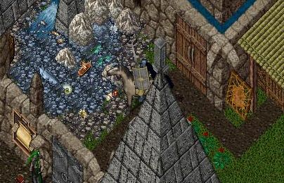
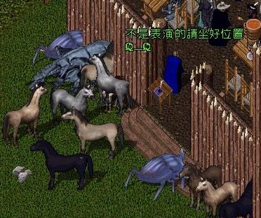
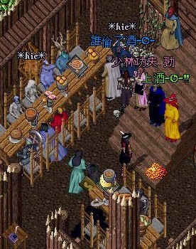
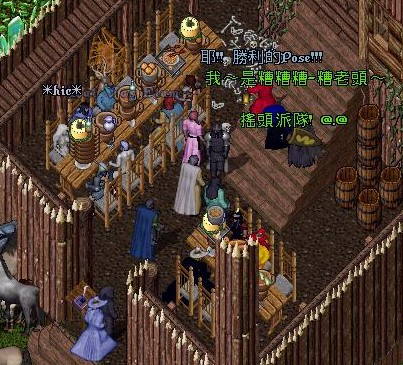
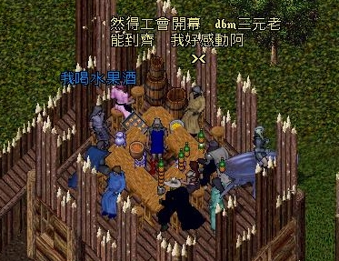
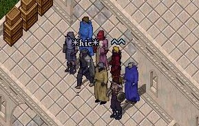

|  |
歡迎來到 [DBM] 公會,進入 Ultima Online 這個冒險的國度.
 成立於 2000 年暑假期間 , UO Formosa Shard .
成立於 2000 年暑假期間 , UO Formosa Shard .
<＜ 6月 6日 , 2004 ＞>
[DBM] coming back !!
6 月 6 日更新日 !每年到了這個時候總是要更新一下身心才會舒暢 -0-
廢話不多說 , 總之是懶+催化效應的緣故
首先報告一下這半年來我們做了哪些事：
1. 年初的倒屋潮我們終於建立了完整的[DBM]住宅區
D' 也將公會屋移到了這邊 (見首頁圖 , 蓋的不錯-0-)
(好景不常-0- 因為沒啥人玩 , 到現在應該倒大半了吧)
2. [DBM]會員大會(1/15) , 主要議題是討論[DBM]的未來
(長達三小時的會議當然包含所有[DBM]以往的傳統-0-)
完整的會議記錄在暑假比較有空閒時會找空間放上來議題包括：
[DBM未來去向篇]
如果 UO 真的倒了怎麼辦 ?
可能轉戰的目標 ?
UO 外是否還用"DBM" ?[公會改革篇]
下一屆會長 (in-game) 人選 ?
如果會員打散了要如何維持關係 ?
DBM 層次從 UO 的公會提升至現實社團 ?[UO篇]
UO 還能活多久 ?
UO 的希望在哪 ?
DBM 在 UO 打算 ?[RP篇]
如果轉戰那人物設定要原班人馬延續還是重頭再來 ?
轉戰遊戲後的 RP 玩法要怎麼走 ?[Bonus]
下屆 in-game 會長當場票選 -0-
3. [DBM]全名改稱提名票選 ( "死神血染月"=> ? )
由於之前開會已決定[DBM]提升至現實社團
所以做出改變全名的票選活動 (縮寫仍同DBM)最後結果是：[ Dream of Blurred Memory ]
(贊成8票 , 反對0票)
句面翻譯的話可以是一語雙關兩種解讀
各字眼也有其代表的[DBM]特質意義
整體而言更可表現出[DBM]的過去展望與未來
詳細的全名內涵解析說明也一樣稍後有空再上傳
4. [DBM]相關創作計劃群 (有多項不同分支)-- <A> [本傳] [DBM大冒險遊記] [網頁] --
好久一陣又沒動了 , 理由是我靈感卡死
照此速度下去可能到 30 歲以後才有可能獨力寫完 -_-
最近正在醞釀新的遊記產生方法 (多人合作)
如果順利的話生產速度會提升好幾倍吧 , 敬請期待 XD-- <B> [外傳] [DBM II(副標未定)] [自製遊戲/RPG2K3] by mel --
即是 mel 的 DBM 外傳 RPG 第二部 (第一部在8/14/2003的更新裡有)
比起第一部的處女作將會有更為完整深刻的故事和設定
目前進度：已完成第一章故事的小說版 (一樣擇日上傳XD)-- <C> [本傳] [名稱未定] [魔獸三的自製遊戲] by cv --
照理說除了網頁上的遊記外都應該是外傳性質
但是本作的時空是架在網頁大冒險結束後的 Malas 大陸
為了徹底把本傳的故事和人物結局做一完美收尾
(因為不太可能冀望在 UO 上了....)
所以決定採取自製遊戲的自由度發揮來表現
(每人玩的過程和結果也不同 , 一切都決定在玩者手上)如果要我說簡單的幾句話闡明我的心聲 , 那就是：
在 UO 裡 , 嘔噎死哀(OSI) 是神
要玩家往東沒人敢往西(不然準備say goodbye) , 君要臣死 , 臣不得不死
他這樣亂搞 , 就算我們再怎麼能屈能伸 , 終究還是要困死在框框裡
但在這裡....玩家自製遊戲....我們才是神！！！進度方面算是進展頗多 , 製作時數兩人加起來應該有破百吧
最近由於現實因素所以暫時休工 , 等待重點的暑假來臨
至於版權問題 , 倒是不必擔心 , 將會有完整配套措施PS：原本 B 和 C 是獨立分開各由兩人分別製作的
後來我和 mel 溝通討論後決定合作交流增進效率和互補
目前計劃是先合力完成 C 第一章內容 (今年暑假為重點)
然後看現實情況決定下一步 , 最終是合作把 B C 都完成-- <C'> [外傳] [魔獸三的自製遊戲] --
其實是製作 C 期間所產生的實驗性邊際產物
有 mel 的"DBM魔獸版預告片"和"Kand白色流星傳說"
還有我的"DBM魔獸版英雄測試RPG篇"與"實測對戰篇"
完成度還算可以接受 , 一樣改日有機會在放 (別打我XD)-- <D> [外傳] [DBM夢想的代價] [小說] by xxdeath --
death 的外傳小說 , 改編自之前曾在 UO 中流傳的書本"天使之淚"
( 不要懷疑 , 作者就是他本人 , 連我們會內都有人搞錯 -.- )
以原本的"瑪奈兒之墓"作為第一章之前的前言的話
目前已連載到第三章哩 , 此外還有四張角色畫像設定及封面
同樣最近會擇期另闢專區上傳 XD (咬我啊 Q_Q)-- <E> [外傳] [DBM傭兵團] [漫畫] by kand --
目前沒有進度....只有一張人物草稿(V)....
5. 歡送 D 當兵晚會 + 真人大冒險日本行會議
終於......寫到最後一項哩......好累 -_-
其實這次集會討論出來的重點不是很明確
主要還是搞笑歡送 [DBM] 長久的支柱 D 去當兵
加上我也還沒整理記錄......orz
以上 , 便是 [DBM] 的近況 , 感謝你還在注意本網站動向 -0-
<＜ 12月 27日 , 2003 ＞>
期待已久的大冒險前奏曲終於完整上線 !!
這次版主有真的更新喔 -0-(台下一片噓聲-_-)
千呼萬喚始出來 (有嗎-.-?) 的這篇最重要的前奏曲之前一直放著沒能釋出是因為一些嚴重劇情 bug 待處理
很幸運的這幾天我重新檢視這部份終於發現問題所在
返璞歸真把當初的準備經過 (包括現實心情) 全寫進去
將 mel 最早寫的那篇移到外傳部份
death 那篇移到序章開頭
終於得以發揮所有靈感寫成整篇完全的準備故事
連所有之前難以交待的開頭問題也一併解決
該說的都濃縮在這篇有點長度的前奏曲中
才滿足本人龜毛主義者的需求 A_A
各篇最底下也新增了 "幕後秘辛" 這個小單元(其實很早前介面就弄好了....只是沒放上來....)
收錄一些這篇大冒險遊記產生的過程
或值得一書的地方 (例如音樂選用 , 文章內藏的含意等等)
前身可以參考 "史話" => "公會前傳" 中最底下的說明文
就類似那樣講解一些不為人知的秘辛
重點是....還沒開放 -0-||| (<=找死=_=)
最後 , 大冒險遊記所在的單元終於得以正名為"冒險" ^_^
「冒險」新增 :
[DBM]大冒險 - 前奏曲 準備
前奏曲 --- 蠢蠢欲動 by Chicov
<＜ 10月 27日 , 2003 ＞>
雜談與計劃
好久沒更新了........-o-( 二話不說就被眾人圍毆後丟到競技場中關門放狗 )
[DBM] 本季 UO 中並無大事遊戲中公會幾乎停擺了 , 有的話也只有個別活動而已
新的 AoS 大冒險計劃推行失敗
反省原因歸納起來具客觀條件者有三：
1. 大環境不再 , 失去冒險需求意願和舞台 (Malas或許不適合)
2. 團員受現實條件影響分崩離析難以凝聚 (可或不可抗力)
3. 新大冒險門檻太高 , 團員能力和注意力尚缺準備 (包括我)
即使阿福當時回溯當機頻繁 , OOC 大魔王肆虐
不過這些在之前的計劃中業已克服
( 這還不簡單 , Malas 可是"時空破碎的大陸" -0- )
劇情背景也都佈好 , 同時亦跳脫了之前大冒險既定的包袱
可惜差了臨門一腳以失敗作終 (如上述三原因)
重新出發的失敗固然令人沮喪但總是下狠心把舊大冒險劇情給作了個了結
還算是沒進展中的小進展
不足的部份就留給想像力去補綴吧
不過 , 在遊戲外本公會還是維持一定的活動力根據目前混沌不明的現狀
如果沒有出乎意料的發展或轉機 , 我把計劃暫定為
以教育傳承我們長久以來的寶貴經驗和知識為要旨
近期應該會陸續公開許多深藏在會內的資料
雖然說阿福還不能說是絕望到日薄西山那種地步
但是此時才認真計劃教育傳承工作還真是有點晚了
不過我們會更加強迫自己去做的
即使精神原本就是不滅的何時做都沒差 -0-
( 眾人：還想偷懶 -0- 給我打 -0- )
<＜ 8月 14日 , 2003 ＞>
網站小更新 !!!
好久沒更新了 -o-(眾人：又是這句話)
由於阿福近日狀況欠佳Publish 19 的姍姍來遲
會員們的現實因素
暑假我們新的大冒險一直無法進行
遊戲內沒有什麼特別的進展
不過雖然玩 UO 的時間少了我們仍然一直持續在活動：
從一開始惡名昭彰的"黑刺王討伐戰"
我們亦在場冒著生命危險取得第一手情報
然後在阿福岌岌可危時
靠 Vagabond 不斷的和 OSI 場外進行談判作戰
終於爭取到 官方的正式回應
(找7月28日的文章或搜尋標題"Formosa玩家請願官方回應")
現在阿福壞掉的主機終於換了 , 玩家權益得以申張
再來是 [DBM] 第一次暑期網聚成功落幕有 death , mel , kand , peeka , 和我共五人
不過第一次沒啥特別的 , 吃飯聊天泡網咖 -0-
最後放上一堆有的沒有的連結包括 Mel 力作 [DBM] 外傳 RPG - 勇者之路
(感謝死神上傳-0-)
kand 和 death 參加 EATW 的桌布比賽
至於這次更新最主要的網站內容....自己看看吧....@0@
「遊記」新增 :
[DBM]大冒險 - 第二章 第十二回
<＜ 6月 6日 , 2003 ＞>
[DBM] 大冒險暑假預定 !!!
好久沒更新了 -o-原因就不必多說了 ([DBM]的網頁版工是出名的懶)
為何選在 6 月 6 日斷腸時更新呢
這是有典故滴....
話說老頭每年到這時候吃壞肚子都會特別痛....
(觀眾別再丟老頭雞蛋啦-_-)
懶得更新的原因很多其中一個就是完美主義作祟 (眾人 : 你要提幾次)
很多東西原本是可放到網頁上給大家看的
不過沒弄好我不太想放 -_-....(怪人-o-)
這段時間 [DBM] 公會並沒有停止運作從 FPG 的袋內佈置比賽開始
DOOM 的巡禮 , 夜市的復興
我們經歷了染上死神 SARS 狂趴的阿福苦難期
還有數不清的出團活動
最近還有 BBC 最佳不列顛尼亞公民活動和端午節
AoS 後說不閒也可以很閒 , 說閒又忙得不可開交轉眼暑假又要來臨了
大家也差不多適應 AoS 的改變了
該是回歸正途的時候哩
總之一年一度的完全(連續)大冒險又即將來臨請各位會員可以開始準備了(尤其是新人)
DBM!!!
<＜ 3月 30日 , 2003 ＞>
[DBM] 公會屋落成餐會實況報導
Malas 公會屋落成餐會在 3/29 當日晚上 9：30 左右正式展開
( PS : Malas 沒白天黑夜之分 , 只有午夜時分瞬間完全黑暗 )
我們由公關 death 邀請了數個友好公會為主的來賓一同來敝公會屋共襄盛舉
由於廚師遲到所以延了半小時才開放進入整群人剛來還誤以為是獸人請的客 @_@
( 這是為了掩人耳目以躲避 [DBM] 死對頭獸人一族的騷擾 -0- )
一開始簽到時就排隊搶筆搶書亂成一團....

首先是會長 D' 的致詞......
等大家都坐下後 , D' 歡迎感謝所有來賓的參加
然後要所有人注意本餐會最重要的會長致詞演講
在大家安靜下來全神貫注準備要聽 D' 的致詞
D'：" 致詞完畢.... 因為我根本沒準備任何致詞 -_-: "
( 真是夠哩！......................-0-||| )
上菜大任是由我們 [DBM] 最像女侍的 Palseut 來擔綱所有人不停的狼吞虎嚥 , 大吃大喝
生怕如果吃得太慢食物就會被搶光了

不料他們都算錯哩 -0-
只見 Pal 菜愈端愈多 , 眾人吃的速度馬上被上菜速度狂壓過去
沒一會兒所有人都開始消化不良 -0-
既然大家都吃不下了 , 也有人喊渴於是便開始把整桶的冷藏的好酒拿出來歡飲
餐會當然不是只有吃東西 , 於是有人提議會長唱歌老頭聽到馬上把台上的 D' 推開自告奮勇獻唱
一旁聰明的 V 見狀臉部開始扭曲 , 連忙逃出公會屋 -0-

接下來眾人活活接下老頭"船歌"的魔音傳腦
加上酒也喝得差不多爛醉了
部份人開始聞頭(老頭-0-)起舞開始暴動 -_-|||
有人醉到跟著跳起搖頭舞
有人更絕以為自己是警察來取締 -.-
然後更有 lich , 北極熊 , 惡魔來狂歡
還有胖食人魔和雙頭巨人打架搶食物
連外面的水晶元素也來湊熱鬧 -0-
老頭則趁亂偷吃別人豆腐 (連男的也摸=_=)
一時場面亂七八糟
可能邪惡之氣太過強大導致觸發了神怒
甚至一度還打通了與各種怪物棲息地相連的月門
( 如 Destard 的龍......Hythloth 的小黑......蛇人堡蛇人......-.-|| )
差點一堆人葬身在想分一杯羹的怪物群中 -_-
老頭從被黑惡魔痛毆的惡夢中醒來之後
宴會已曲歡人散 , 剩下醉倒的人和狼藉的餐桌
不過不久 [DBM] 核心會員們也都清醒回來到齊了
於是會員們與剩下的賓客就到三樓的精緻酒吧
坐下來邊喝茶喝酒聊天打屁
沒想到老頭一樣是無視酒精中毒的危險狂喝烈酒突然一陣慘叫 , 接著意識不清的呻吟
原來老頭的解酒液用完哩...... ( 難怪這麼能喝 , 簡直非人哉 -0- )
噗咚一聲老頭終於再起不能 -0-
 就在這個時候 , Saterina 偕同久違的 Mel 回到了新公會屋！
Mel 終於要退伍了！！
XXdeath , Mel , Saterina , D' , V-Devil , Palsuet三元老全到 , 三任會長也全到！
這是 [DBM] 公會難得重逢的一刻
畫面將會永遠在眾人的心中 ^_^
感謝所有參與來賓：
( 人太多記不完只能看簽到簿 @_@ , 有遺漏的請轉告我 )
Alain
PIG [X-I]
[X-I] 會長 月影 Jerry
Blue [X-I]
LOVE 阿祥 [X-I]
SLF 會長 Delete
MAYA
CAREF
[^^V] 會長 NeonBaby
Phoe = Morning Star
<＜ 3月 28日 , 2003 ＞>
[DBM] 公會屋落成餐會
在 Malas 的公會屋大致完工將在本週六晚上九點舉行落成餐會
歡迎有興趣的各位朋友一起來參加
當作請客來坐坐聊聊天 ^^
在 [DBM] 公會時間線上而言是在目前大冒險進度的好幾回後
在大冒險進行到 Malas 大陸出現後
劇情才會銜接過來
<＜ 3月 12日 , 2003 ＞>
公會改革預定 !!!
公會新管理制度草案決定大冒險活動也會有所變革
然後討論區決定和聊天區分離
子公會 DBN 部份還在籌畫中
等完成開放 [DBM] 遊戲方式透明化後
近期就要開始徵收新人
讓我們一起把角色扮演精神推向下一個高峰 !!
<＜ 2月 28日 , 2003 ＞>
AoS 角色扮演面面觀
因為 UO：AoS 的終於上市本人忙著適應新系統和房屋事宜
又逢開學事忙 , 玩的時間有限 ( ?-.- )
所以拖了這麼久才更新....
( 路人 : 懶就別找藉口!! )
總之這幾週來發生的事不算少
找機會 (才怪....) 再把其中比較有趣的拿來分享
閒話不說了 , 直接進入主題
AoS 的出現對原本的角色扮演環境造成哪些影響呢？
角色扮演的獨特性：( Excellent !! )
新物品和新戰鬥系統讓角色技能更趨向多元化打亂長久以來穩固的牌局
讓玩家更難為了"強"而一窩蜂走相同的既定路線
活化多變性的想像世界人物
例如屬性不再加成技能表面值一些技能都變得更加專業化
像紮營烤肉這些 , 現在沒練的話可是做不來的
戰鬥的話 , 各大職別的定位更為重要抵禦 , 傷害 , 輔助等角色都較以前鮮明
很難再出現以往"王道型"的角色
每一種角色都勢必有某方面的缺陷
不同的武器特攻讓每個戰士的打法更為獨特不同的魔法系統讓每個施術者擁有更大的不可替代性
不同的裝備組合讓每個角色的特性更加突顯
至於新舊之間的平衡性還有待時間來驗證兩種新技能職業都相當有用且強勢(?)
相信以後路上會多出不少趕風潮的角色
角色扮演的自由性：( Poor... )
基本上自由和獨特常是併為一談的不過這邊強調的是玩法上的自由
也就是角色扮演較不受 遊戲機制 影響的程度
AoS 多變的物品屬性和新戰鬥系統表面上是增加了使用裝備的彈性
事實上卻是限制了角色扮演的自由
舉個例 , 現在穿甲不扣 dex , 看起來選擇好像變多了其實不然
限制條件反而變相成了必須撐高 STR 才能穿重甲
練 Focus 技能才能穿皮甲以外的護甲
如果再加上抗性問題 , 將會頭痛許多
好防具也愈來愈難取得
以前穿個爛甲就能勇闖天下的傳說不再
現在由於戰鬥難度的提升
裝備必須要更加斤斤計較
選擇雖多了 , 但相對的卻被遊戲機制箝制了
好吧 , 就算你可以不管它照樣穿著你想要角色穿著的裝備
但是戰鬥是冒險中不可避免的重要環節
每次遇上戰鬥你將會到處碰釘子
技術差點的就當場死給它看
想裝清高？這樣可是行不通的
除了一死再死 , 你還如何能夠悠閒的進行角色扮演？
這是很難克服的一點不過我相信經過訓練和學習研究後
再加上有這方面分析能力的人幫助
應該勉強可以過關
可是自由度仍然是無法和以往相比的....
角色扮演的互動性：( Good ! )
前面提過角色技能搭配會更加多變相對的各種戰鬥角色的優缺點也愈明顯
戰鬥難度的提升和系統的轉變
讓角色互補和各司其職的重要性遽增
同時也促進了社會互動及組隊行動的需求
生產系這次也獲得強大的影響力以往工匠充其量只能當個背後的無名英雄
難聽一點......只能算是個"工具"......
要說到更有深度的角色扮演
可以說很難沾上一點邊
而現在 , 生產系終於出頭天了(至少部份)
(也就是說你或許可以完全不用玩戰鬥角色了)
(有經營買賣 , 有訂單 , 有裝備需求 , 有自訂屋 , 錢又難賺)
戰鬥角色想要躋身傳說英雄之列
必定要先臣服於出色的工匠腳下 XD
雖然如此我相信很多老玩家都會有自己的工匠任由使喚
大家也早就養成自給自足不假外人他手的(好?)習慣
或許 AoS 帶來的影響不會像我以上說的那樣誇張
不過有總比沒有好
工匠現在總算是獨當一面的角色了
以上就是我對 AoS 的初步角色扮演分析
有機會下次再會 －O－
<＜ 2月 9日 , 2003 ＞>
慶祝 UO 邁入下一個世代
UO：AoS 就要上市發售了[DBM] 全體向各位拜個晚年
獻上大冒險第十一回的故事
( 下一回 ? 再來就都是我的個人秀哩 , 哇哈哈哈哈 @0@ )
「遊記」新增 :
[DBM]大冒險 - 第二章 第十一回
<＜ 2月 7日 , 2003 ＞>
Malas 大陸概論
Malas 是永生寶石碎片上最特別也是最黑暗的一面
受到不明力量影響已開始向四方分裂
Malas 不是完整的大陸 , 而是破碎的島群漂浮在星海虛空之上
主要分成三大部份：
北邊和南邊之間由 divide of the abyss 這個深淵所分隔南北各有個主要城市： Luna(月) 和 Umbra(影)
分別代表光和闇 , 聖騎士之城和死靈法師之城
( 看城市外型就知 , 我認為還有秩序 vs 混沌 -0- )
至於連接這南北兩半部的第三部份 (地圖左下)已經開始破碎崩解
各小島都只以橋樑來相連
( 另外地標當然還有我的最愛 --- 即將登場的 DOOM 啦 -0-!!! )
據有限的情報看來該地的人類住民是來自 Britannia 的
經由一個叫 Gatewater 的通道來到 Malas
( Gatewater 就是地圖下方那個 Gravewater Lake ? )
其實就是一個海上的漩渦(whirlpool)
因此這邊每一位住民都知道 Gatewater 的事情
幾世紀以來 , 他們也尚未找到回去的路
其他的不說了 , 想看自己去看
Dawn 現身與 Blackthron之死 by Palsuet
在上午 8:00 參加了 , 直到 8:20 結束都是一些老土說話 , 說什麼保衛了家園 , 打退敵人之類
最重要的是 ----> 她說 Lord Blackthron 死了
這是做什麼的!!! 根本就表明了 LBR 的劇情就此完結LBR 果然是騙錢
還有 OSI 也不安好心 , 本想說居然會辦活動卻是為了讓 LBR 草草完結
重要公會事項討論
既然 OSI 已決定讓 Lord Blackthorn 赴死那我們也不能讓我們的敵人這麼草率陣亡
看來該是大型活動的時候了......
(請會員至討論區討論)
<＜ 1月 29日 , 2003 ＞>
寒假大冒險活動預定 !!!
時間訂在過完年的下一週週末晚上 (二月7~9日)將延續(或另開分支路線)上次的大冒險劇情
請各位開始進行準備了
D' , Saterina , peekawar , Palsuet , (V-Devil)除了以上角色之外
其他的都要想出登場劇情
前情摘要：DBM 一行人藉由哈文鎮長 Uzeraan 的協助離開了 Haven
在 Vesper 順利完成了黃金色藥水的製造
而下一個書本上的謎題
又將帶領他們去哪裡尋找下一種生命之藥呢？
本週活動公告 by death
DBM 的同胞們我們將參加 SLF 的"探險活動"這次活動詳細內容如下
３－４人一組
規定要取得幾樣關鍵性道具(怪物身上的)
不能 RECALL , GATE
從公會屋出發後 , 先完成任務回來的得勝
時間定在這個星期四 ２２：００
請各位參加的會員提前１５分鐘到達 SLF 公會屋檢查身體
規則!! 每人只能限用戰士
身上不能帶任何物品符石書也不能帶(除了防具和盾)
到時會有箱子給你放符石書(盡量放自己家裡)
SLF 會自行分發所需的物品
如武器 , 藥水 , 繃帶 , 藥材 , 有可能會用到的物品
意思就是說全身只要帶防具來就好啦
現在已經有新人 UENO(非本工會) , CV , PK , DEATH 參加
請要參加者於星期四晚上９：４０到 DBM 公會屋集合 ^^
( death 你寫得亂七八糟 , 錯字也一堆 -0- 幫你重整一次了 -0- )
重要公會事項討論
請到秘密討論區討論關於新人招募的方案解決公會後繼無人 vs 公會素質的問題
<＜ 1月 19日 , 2003 ＞>
Mel 的漫畫
Mel 的大作畫完哩加上先前的兩頁共四頁
真是惡搞的經典啊
( 好像不是惡搞 , 是寫實 -0- )
一樣有小更新一樣都是不容易發現的小地方
請自行尋找 -0-
「史話」新增 :
<＜ 1月 8日 , 2003 ＞>
大更新計劃中的小更新(三)
這次的小更新比較少都是些不起眼的小地方而已
比較大的都還沒完成 -_-
另外......也才是重點！第十回終於完成啦 ^O^
「遊記」新增 :
[DBM]大冒險 - 第二章 第十回
<＜ 1月 1日 , 2003 ＞>
大更新計劃中的小更新(二) & 公會石意外
網頁音樂撥放方式已改變取消自動撥放改成手動撥放
撥放方式是點一下各頁面的 "Start BGM"
停止方式是左邊目錄下的 "Stop BGM"
目前首頁是暫定不自動撥放
成員名單頁面也有更新主要增加圖片和角色扮演程度評估
不過尚未百分之百完成
重要 !!!
某人耍白爛把公會石會員全刪哩 -.-請各位到公會石重新加入
白天找 D 加入 , 晚上則找 death
<＜ 12月 14日 , 2002 ＞>
大更新計劃中的小更新 & 公會活動領導代班
目前我正在全力建設角色扮演專區中其他部份的話
一篇大冒險遊記我資料搜集和草稿都弄好了
這幾天我也會盡快完成放上線
一些網頁圖片部份我也正在處理中
什麼時候會上線我就不保證了
不過天天還得陪各位出團我還真是有點吃不消啊
加上 D 現在時間也不是很能配合
所以活動召集人就交給 death 和 vag 了
我的計劃是在這個月完成角色扮演專區但我的習慣是這邊做做再換那邊做做
所以每一邊的完成度都不夠
不到滿意我是不會上傳的....
大冒險遊記方面....也不得一直暫緩了我將撥出大量時間來弄[DBM]的東西
如果支持我請多多分勞別讓我操煩 -_-
因此今天就先把一小部份先放上來....
「相關連結」大幅更新 :請點選左方目錄區
<＜ 12月 8日 , 2002 ＞>
被遺忘的 Blue
大冒險第六回本來登場客串人物除了 JAZZ 外還有另一個冒險者叫 Blue
之前我一直想不起來到底叫什麼名字
現在終於想起來了-_-
就是我們五人一路從 Britain 經下水道殺到 Papua 的Blue 有學魔法 , 幫忙隊伍解毒的貢獻無可比擬
特別是沼澤地裡暗藏大量有毒的巨蛇
對當時新手的我們實在非常難以應付
第六回的開頭省略掉的那段旅程可是我印象中相當深刻的一場冒險哦
有機會我會把這段故事寫出來的 ^^ (可能會在大冒險故事中)
啥？ 你問我那條古代魔龍哪來的？因為我們剛到 Papua 門口就遇到 UO 生涯的第一條龍 @@
( 打到一半被警衛 Ruby 劈掉哩 -_-")
「遊記」修改 :[DBM]大冒險 - 序之章 第六回
<＜ 11月 27日 , 2002 ＞>
網站終於更新 -o-
由於暑假過後所有人都愈來愈忙了(慢慢長大了....)連常駐程式 D 都變成只能白天玩了(大夜班)
所以本公會停止運作將近三個月
最近 death 受傷休學
終於可以再次回到 [DBM]
因此我認為休息夠了打算再出發
除了當兵的 考試的 工作的人外
其他人都給我回來吧 -0- (好像也剩沒幾個@o@)
第一件事是更新遊記(death現在超閒)有能力有興趣或想嘗試的過來幫忙吧 -0-
秘密討論區的話我近期就會弄好
掛掉太久了.... 死 pchome -_-.....
最後還放上了 Mel 放假抽空所畫的漫畫希望大家多多支持
「史話」新增 :
<＜ 10月 20日 , 2002 ＞>
網站更新和公會石重整
經過我和 D 討論後 , 決定公會成員重整只有參與角色扮演的角色才會繼續留在公會名單上
所以現在公會石不會看到任何生面孔了
一律和網站上的名單無二致
此外暑期完全連續大冒險暫告一段落之後將回復以往公告後才進行的形式
新成員加入
Dark CIA (CIA) 大冒險第五章前就加入了只是沒更新忘了公告出來 @@
CIA 在現實世界是 Alu 的弟弟
是第一次接觸角色扮演 , 請大家多多解囊傳授
<＜ 8月 8日 , 2002 ＞>
[DBM] 網站改版 !!大冒險第五章結束 !!
先向各位支持本網站的朋友說聲抱歉本站已近兩個月沒有更新
最大原因當然是劣者我實在太懶
二則是本公會在暗中進行 Ilshenar 的大冒險
留言板也關閉許久沒有開放
真是對不起所有支持我們的朋友 m(_ _)m
所以一更新就先來個內容改版吧把之前網站的鬆散架構重新調整編排
新增 UO RPG 指引專區 , 捨棄其他不必要的內容
專區內容會陸續增加 , 全力推展 RPG 活動
另外還加入廢人同盟 的〥福爾摩沙中文網站同盟
近期我們也將會有大動作
敬請拭目以待吧 ^_^
對了......還有父親節快樂 !!
「遊記」更新 :[DBM]大冒險 - 第五章 目錄
<＜ 6月 7日 , 2002 ＞>
暑假期間 [DBM] 大冒險活動預定完成 !!
暑假期間 (七∼八月份)將會在 Ilshenar 大陸 進行一連串的正式大冒險
會完全依照大冒險途中不脫隊(回家)的方式進行
為配合 Publish 16 的規則即將改變以及部分公會成員還是學生要期末考試等因素
在六月份我們暫停大冒險活動 (可能會有一次大冒險)
讓大家有更多的彈性時間適應新 patch 和準備課業
還有請利用時間把 銀行保險箱 整理一番暑假的大冒險是 完全的大冒險
補給的機會可能只有遇上 Ilshenar 大陸的流動吉普賽營地
所以務必把大冒險所需的物品放在銀行以便補給
一些頁面都有稍加更新細節 , 推薦連結新增不少
「公會成員」新增 :peekawar , Denning
「冒險日誌」新增 :[DBM]大冒險 - 第二章 第九回
新成員加入
Palsuet (Pal) 和 Denning (Vag) 一樣是來自香港的玩家Vag 應該不用多做介紹了 , 應該大部分人都認得
Pal 是個UO新手 , 大家可要多多照顧哩 ^^
重要公會改革
特別增設"非公開聊天討論區"來加強公會內部互動網址我已傳到各位的 ICQ 了 (沒收到的找我要)
請全體會員務必天天到訪 , 並加入書籤以便連結
這個討論區沒有刪除留言的必要
請暢所欲言 , 一天灌個幾百篇也不成問題
音樂版權宣告
本站所用 midi 音樂 , 來源種類繁雜 , 著作權為原作者所有而非本站
僅作為情境配樂之用 , 如有嚴重侵犯作者權益 , 敬請來信告知 ( E-mail )
© [DBM] Guild , all rights reserved.
所有文章未經同意禁止轉載

□ 〥福爾摩沙中文網站同盟 □
[登錄一覽] [參加登錄]
[下1個登錄網站] [下5個登錄網站]
[前1個登錄網站] [前5個登錄網站]
[隨機選擇網站]@ 網站管理者 Chicov (UAC)